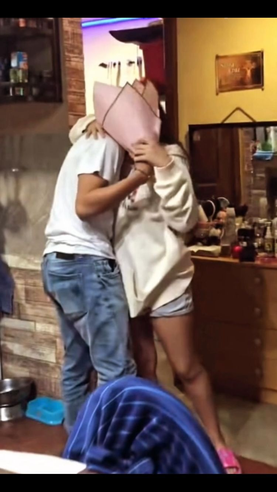
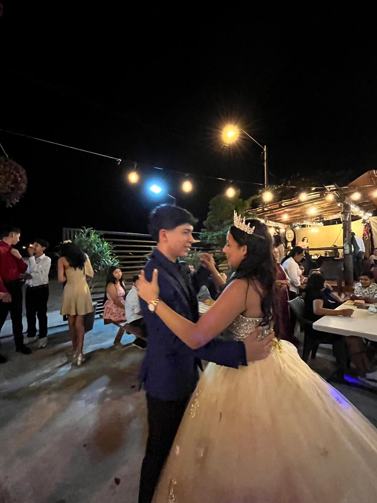

Me encuentro aqui, haciendote una pagina Web para ti cuando nunca se lo habia hecho a alguien, ni para el colegio jajaja, Hemos pasado tantas cosas juntos, no pense conocer a un persona tan maravillosa como lo eres tu, le das sentido a mi vida antes no sabia ni que hacer con mi vida le das felicidad, como dices eres la casualidad mas hermosa que me paso, quiero una vida contigo, quiero casarme viajar por el mundo contigo.... eso lo hablamos despues porque todavia falta bastante para eso, yo no se que haria sin se que hemos peleado y tenido nuestras diferencias, pero a pesar de todo eso nunca te deje de amar.
1/7/24:Fue el comienzo de una historia de amor, fue la mejor desicion que pude haber tomado, la verdad no se que hubiera pasado si no mandaba ese "Hola jhanna" seguramente orita no se que estaria haciendo, pero lo que si se que mi vida seguiria sin sentido y aburrida 22/7/24: dia que conquiste tu corazon por completo el mejor dia de mi vida "por el momento jajjajaj" 1/8/24:Primeras flores que te lleve, ese dia estaba nervioso, casi me desmayo nononono me estaba muriendo de pena y tu papa tenia una cara disque de "ahh siii le trajo flores a mi princesa lo voy a pelar jajaj" 4/10/24: Dia que hable con tus papas para pedirle permiso para ser tu novio, estaba que me moria de pena y cuandoo me dijeron que bienvenido a la familia me moriiiiiiiii casi lloroooo 24/12/24: primera navidad juntos, aunque no en si juntos pero estabamos juntos yo me entendi jaja ,con ese carro control remoto mi niño interior se puso muy felix te doy las gracias por traerlo devuelta 31/12/24: pasamos a un nuevo año para escribir 12 temporadas mas de nuestro amor aunque nunca faltaron las peleas ajjaj pero no quiero que las peleas nos ganen siempre quiero estar a tu lado
Siempre estuvimos tan cerca uno del otro que hasta yo me sorprendi pero voy a comenzar por el dia que jugamos juntos ya sentia una conexion que no puedo explicar, cuando terminamos de jugar, estaba feliz, y te pregunte tu nombre todo nervioso y haciendome el interesante cuando orita me tienes haciendote esto cuando nunca jajaj, pero aja buscaba tu cuenta pero no me aparecia porque buscaba "Hanna en ves de Jhanna" casi pienso que no me quisiste decir tu nombre real, el dia que te escribi el "hola jhanna" pense durante 2 horas disque lo hago o no lo hago jajaja pero lo hice y cuando lo mande tire mi telefono con miedo a que no me respondieras y tan cayo un mensaje de instagram y eras tu y yo todo nervioso y disque voy hacerme el ocupado,(no estaba haciendo un carajo pero aja) y todo comenzo hay, me acuerdo de la llamada hasta las 5 de la madrugada osea primera llamada 5 de la MADRUGADAAAAAAAA pero fue lo mejor ese dia me acoste feliz y bueno por seguir haciendo eso me quede dormido y no fui al colegio y mi mama se dio cuenta hasta que sude frio, cuando me quitaron el telefono y te chateaba por instagram osea con miedo a que me descubrieran, ME SENTIA FELIZZZ haciendo eso feliz feliz, despues de todo eso bueno el 1 de agosto vi su compartido, y todo asi nervioso que casi me devuelvo para mi casita fui a llevarle las flores ay no cuando vi a su papa sentado en la SALAAAAAA te lo juro que me dio miedo y hasta khayam estaba hay osea todos yo solo pense que ibamos a estar tu y yo, pero estaban todos y yo hay todo miedoso con unas flores que llegue de sorpresa y su papa viendome porque hasta el dia de hoy no se si sabia si yo iba a llegar con flores, que estaria pensando disque, "este pelao que viene a traerle flores y le puedo comprar 3 mas" y no sabia ni de que hablar osea yo no soy asi pero como eran mis futuros suegros como que me dio miedito, cuando le iba a escribir a mi suegra osea escribi como 25 formas de mandarle mensaje porque no sabia como y demore como 1 hora viendo cual era el mejor para mandarle y bueno gracias a dios no me gano los nervios y lo mande bueno pasaron los dias tuvimos nuestras peleas y discusiones y llego el dia de las flores amarillas, pero lo recordare como el dia que le cague el piso a tu papa noooooo yo no sabia donde meterme porque yo habia sido el que dejo la puerta abierta nonooooooooo me moria nononononono te lo juro que tenia pena una penaaaa que yo en mi mente disque "no voy a venir mas porque ya le caigo mal" que pena y ni le dije a mi mama porque se iba a burlar de miii bueno pasaron los dias dure como 1 semana con pena y bueno llego el dia 4 de octubre que fue el dia que hable con tus papas, nononono ese dia me estaba muriendo se me olvido todo lo que hiba a decir, y tuve que decir lo que me saliera del corazon y tu papa disque bueno ya sabia por donde venia la cosa y yo disque "ya vali no me va a dejar", bueno el me dice papa usted se ve que es buen muchacho es respetuoso y respeta a jhanna y eso es lo principal, y bueno cuando estabamos en terminando la conversasion, me dice lo mejor que pude haber escuchado "Bienvenido a la familia" eso fue algo que amor no te lo pueod explicar nononono amor casi lloro enserio enserio, y cuando ibamos subiendo para la casa porque yo iba con khayam para la casa de adrian bueno el sr Danny nos fue a dejar y bueno abrio la puerta y pues enpezo abrazar a khayam y adrian porque se estaba despidiendo y bueno yo pues me habia hecho un poco lejos pues porque solo le iba a decir disque "hasta manana sr Danny" y me dice que hasta mañana de que venga aca y me dio un abrazo nono dos lloraditas en un solo dia y dijo cuidese oyo lo quiro mucho na ya yo podia morir hay mismo, y me fui felizzzz a jugar con khayam y adrian osea yo estaba disque "aqui es donde justo quiero estar" ahora mi mayo miedo era que tu te cansaras de mi o ya no te gustara y yo ya no poder estar asi mas con tu familia nononono ese es mi mayoor miedo todavia, AMOR USTED ME TRAJO FELICIDAD A MI VIDA CUANDO ERA SIN SENTIDO, ERES LA UNICA QUE DE VERDAD ME AH HECHO FELIZ ENSERIO PORQUE SIEMPRE, SIEMPRE Y SIEMPRE VAS HACER EL AMOR DE MI VIDA JHANNA DANESSA MARTINEZ FRANCO DE GONZALEZ, TE AMOOOOOOOOOOOOOOOOOOO CON TODA MI VIDA Y MI ALMA, y como el primer sobrenombre que te puse, TE AMO MI CORAZON DE POLLITO TE AMUUUUUUU